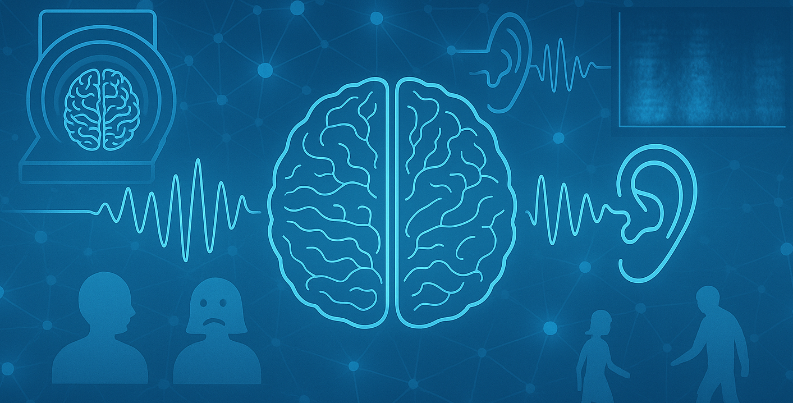

Auswirkungen des Schlafs auf das Gedächtnis - Effects of Sleep on Memory
Eine Studie, die zeigt, wie guter Schlaf dabei hilft, Langzeitgedächtnis zu bilden. A study showing how quality sleep helps form long-term memories
Search by title or keyword, then filter by topic to find the summaries most relevant to you.
Eine Studie, die zeigt, wie guter Schlaf dabei hilft, Langzeitgedächtnis zu bilden. A study showing how quality sleep helps form long-term memories

Die Gehirnaktivität während der Aufrechterhaltung des Gleichgewichts messen -Measure brain activity while maintaining balance

Research on how our brain process everyday sound

Research on brain connections within the tinnitus brain

Messung der Gehirnaktivität beim Gehen Measuring Brain activity while walking

Untersuchung, wie Darmbakterien die Stimmung und das Verhalten beeinflussen Investigation of how gut bacteria influence mood and behavior

Research on how rising ocean temperatures affect coral reef survival